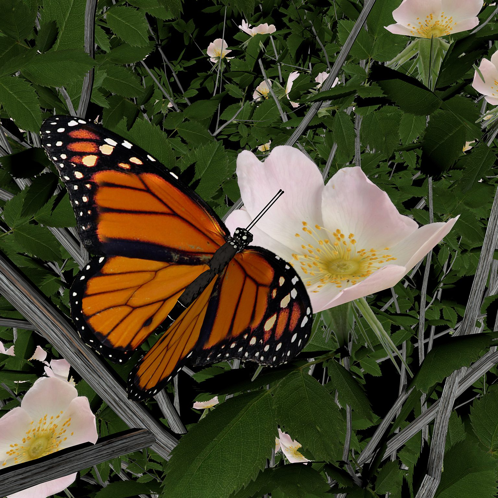
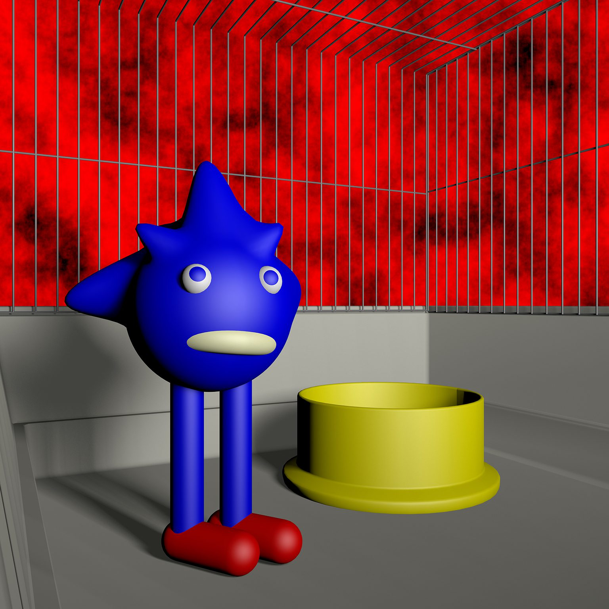
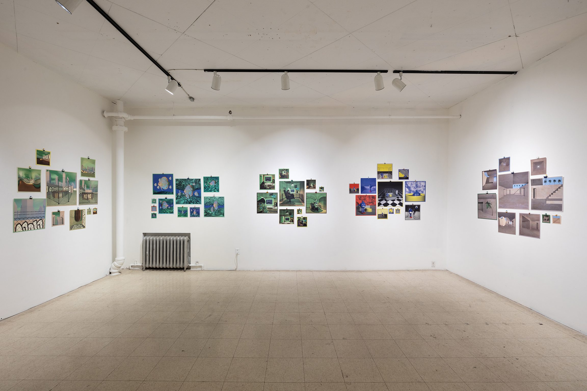
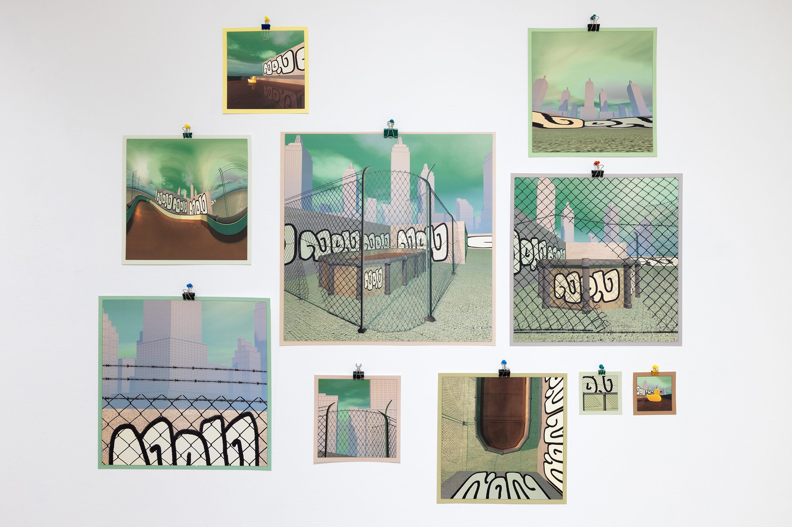
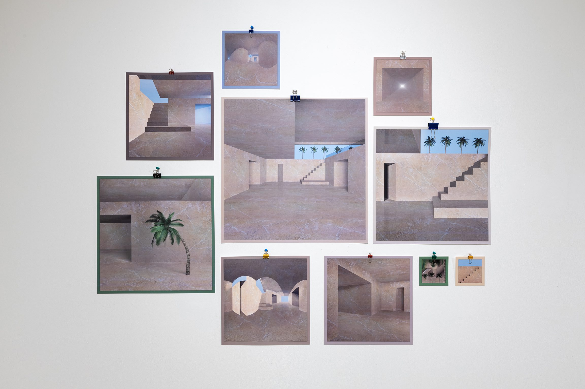

Seven worlds to observe from outside or inside. The final exhibition of the Art Mûr VR program: visitors could enter the 3D file of the prints on the wall, like choosing which painting to step into.
Katerine DM approaches 3D image-making the way a photographer approaches a scene: selecting composition, objects, lighting, textures, camera angles, depth of field. But she also sees it as set design, creating a universe that can generate its own stories. Her aesthetic draws from video games, architecture, interior design, nature, and the limitations of her own computer, blending these influences into environments that feel simultaneously familiar and impossible.
The exhibition was conceived so visitors could enter the 3D file of the prints on the wall, like choosing which painting to step into. The ambiance on paper may differ from the headset experience. What reads as a static composition on the gallery wall becomes a vast, explorable world in VR. This dual presentation captures the essential tension of the entire Art Mûr VR program: the relationship between looking at art and being inside it.


The exhibition closed the two-year Art Mûr VR program with a show that perfectly encapsulated its central question: what changes when you can step inside the artwork? Katerine DM’s prints function as windows into complete worlds. In VR, those windows become doors. The visitor’s relationship to the image transforms fundamentally; the observer becomes an inhabitant.

